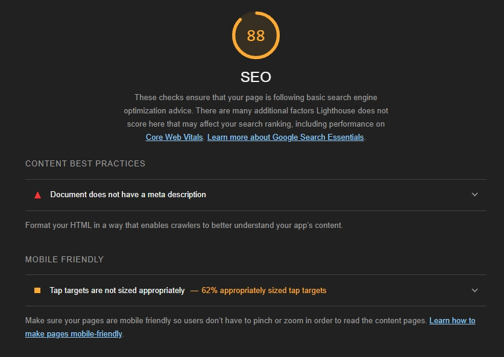

Analyse av SneakerCorner™
Nøkkelord undersøkelse:
Etter noen søk via Google Trends, fant jeg ut et par søkeord som ikke bare blir ofte brukt generelt i Norge, men også i Østfold område der den fysiske butikken til SneakerCorner har lokasjon. De populære søkeordene jeg fant var: Billig, Sko, Nike, Adidas, Hoka. Alle disse treffene hadde over 100+ søk i døgnet og er derfor viktig å bruke for å få flere klikk på nettsiden. Disse ordene ble valgt ut da det er kjente merker butikken har, som da belyser kundene om hva butikken selger.

SEO test med lighthouse:
Forside:
Som vi ser på de 2 bildene over fra lighthouse har forsiden 2 klager. Første feil at siden mangler meta description, som enda ikke blitt lagt inn. Andre klagen omhandler for liten tekst i header, noe som gjør det vanskelig for mobilbrukere å trykke. Den ønsker minimum 48x48px størrelse.
Produktside:
Her er det så og si samme feil som på forsiden, bare litt større tekst i header som må rettes på.
Slagside:
Her er det så og si samme feil som på forsiden, bare en del mindre tekst i header som må rettes på.
UU test med webaim:
Forside:
Webaim reagerer på 2 kontrast "feil", som sier at brukere kan slite med å lese teksten. I tillegg reagerer den på en "Possible heading" (Fordi det ser ut som "Filter" skal være en overskrift, dette stemmer ikke og skulle blitt gjort om til en filterfunksjon i fremtiden) og "skipped heading level" som er pga jeg ikke har brukt "h2" tag. De resterende "klagene" går ut på at noen av header linkene linker til samme side, noe som var meningen for enklere navigasjon under demo.
Her ser vi kontrast feilene er markert med rød firkant i header.
"Possible heading" feil på top ved Filter, h2 mangel til venstre og link til lik side feil til høyre.
Produktside:
Her ser vi de samme feilene kom som på forside, bare at "Possible heading" ikke er her.
Salgside:
Her ser vi de samme feilene kom som på forside, bare at et par ekstra "Possible heading" feil, dette er pga. visning av funksjoner som skulle ha kommet i framtiden på nettsiden.
"Possible heading" feil på tekst over.
UU og SEO test med chatGPT
Forside:
Her forklarer chatGPT at jeg bør ha en mer nyaktig tittel. Den reagerer også på mangel på meta som bør legges inn. Ellers minner den meg bare på å ha god struktur og legge på "alt" tager ved bilder.
ChatGPT ønsker at jeg sjekker kontasten, nevner blant annet header området. Den ønsker også jeg passer på "h" strukturen min, dette klagde også webaim på. Ellers er det bare generell struktur man bør sjekke manuelt.
Produktside:
ChatGPT viste samme resultat som på forside, noe som gir mening da sidene er veldig like.
Samme som forside.
Salgside:
Også samme som forside, men nevner også "sosiale medier Open Graph Meta" for utsenede på sosiale medier.
Her var det mye likt akkurat som forsiden, men den nevner blant annet språk endring til norsk.
| lighthouse | Webaim | ChatGPT |
|---|---|---|
| META tager | Kontrast header | Meta tager |
| Header tekst størrelse | Skipped Heading level | Kontrast Header |
| Skipped Heading level | ||
| Nyaktig tittel | ||
| Språk Norsk |
Vi fikk relativt like resultater fra de forskjellige sidene. ChatGPT nevnte nesten alle "feilene" lighthouse og Webaim påpekte, uten om Header tekststørrelse. ChatGPT nevnte derimot en mer nyaktig tittel og eventuel endring til Norsk språk (no).
Forbedret nettside
SEO av Forside, Produktside, Salgside:
Her ser vi scoren av SEO etter siste lighthouse test, jeg endret følgende:
- La inn META tager på alle sider, der jeg brukte søkeordene jeg fant fra Google Trends.
- Endret til strørre tekststørrelse XX-large fra X-large på alle sider.
UU av Forside, Produktside, Salgside (I den rekkefølgen!):
Jeg har valgt og ikke fjerne "Possible heading", "Redundant link" og "Possible heading" da disse er med for demo sidens skyld. Så sånn sett ikke feil.
Her ser vi resultatet av UU etter siste Webaim test, jeg endret følgende:
- Endret farge på headerfelt til en litt mørk gulfarge på alle sider for lettere lesing, noe testen godkjente
- Endret om h3 tagene til h2 tager, slik at feilen "Skipped Heading level" forsvant på forside og produktside.
- Endret tittel på alle sider til noe mer beskrivende om nettstedet.
Skjermleser kompatibilitet:
Som vi ser på bildene under klartre skjermoppleseren å lese teksten som sto i main på alle sidene. Problemet var at den ikke leste header eller footer automatisk, litt usikker på om dette er meningen. Hvis man limer inn all teksten manuelt i programmet, vil den lese opp alt inklusivt "alt" bilde tekst


Tastaturnavigasjon:
Etter testing av tastaturnavigasjon fungerte det meste på alle sidene. Eneste var ikonene i header som ikke ville registrere, samt "p" tagene på salgside. Dette løste jeg ved å legge inn "tabindex="0" i tagene det gjaldt, som gjør at de registreres via tab.
ARIA-attributter:
Her la jeg til "aria-label=" for header, main og footer slik at skjermoppleser kan fungere enklere.
Microdata:
På bildet ser vi microdataen jeg har lagt inn. Her har jeg brukt "itemscope itemtype="https://schema.org/Product"" som referer til "spåket" som sier det omhandler produkter. Jeg la til blant annet itemscope "name", "image" og "url", da dette passet best. Det burde også ha vært en "itemprop="description"" ved beskivelsen av produktet hvis siden skulle blitt puplisert, da ikke hele teksten er ment som en url.
Desverre fikk jeg ikke kjørt nettsiden via validatoren, da nettstedet mitt ser ut til være blokkert for siden. Sjekket at det var riktig url og på flere maskiner. Beklager for dette!
Meta tags:
Jeg endret tittle og metabeskrivelsene til noe mer passende på hver side, her brukte jeg søkeordene jeg fant med Google Trends.
I tillegg la jeg inn meta-data for Facebook og instagram som kan ses på bildet. Dette ble lagt til på alle sidene, men "og:title" og "og:url" ble endret til å passe de forskeligge sidene. Facebook og instagram "deler" mye meta data, men la inn spesefike meta data til instagram som spesifiserer bildeteksten og bilde.
I meta data tagene ble det lagt inn tittel, beskrivelse, bilde, url til nettside, spesefik instagram beskrivelse og bilde. Nå har instagram tagene samme bilde og beskrivelse som facebook, så er sånn sett unødvendig, men i virkeligheten ville man eventuelt hatt noe spesefitk der.